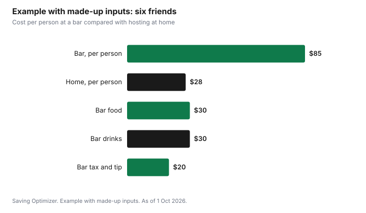

Sports · Canada
Watching the Big Game: Sports Bar vs Hosting at Home
For a group, hosting at home is usually cheaper than a sports bar, because the stream is a small shared cost and food and drinks cost less from a store than from a menu. A bar night adds menu prices, tax, tip and a ride home for each person. In the made-up example below, six friends spend $85 each at a bar and $28 each at home. The bar can still be worth it for the atmosphere, a big screen you do not own, or when nobody wants to host. Whatever you choose, plan the ride home before the game starts.
Key takeaways
- At a bar, each person pays menu prices, tax, tip and transport.
- At home, the stream and food are shared, so cost per person falls as the group grows.
- DAZN and TSN+ list base plans at $24.99 a month as of 1 Oct 2026; your TV package may already include the game.
- A CCSA standard drink is 341 ml of 5% beer, 142 ml of 12% wine or 43 ml of 40% spirits.
- Health Canada: discard perishable food left out more than two hours.
- Example with made-up inputs: $85 each at a bar versus $28 each at home for six people.
What a night at a bar really costs
A bar bill is more than the drinks you order. Add the items below before comparing. Some bars ask for reservations, a minimum spend or a cover charge on big game days; ask when you book. Sales tax is added to the menu price, and so is any tip you plan to leave, so build both into your estimate.
| Cost | Notes |
|---|---|
| Food | Shared appetizers go further than individual mains |
| Drinks | The biggest variable; set a limit in advance |
| Sales tax | Added to the menu price |
| Tip | On the pre-tax or post-tax bill, your choice |
| Reservation, cover or minimum spend | Common on big game days; ask when booking |
| Transport | Transit, taxi or rideshare both ways |
Streaming one-off events vs subscriptions
To host, you need the game. Check your TV package first; it may already include TSN or another channel carrying the game. If not, DAZN says NFL Game Pass is included with its Canadian subscription, with DAZN Standard listed at $24.99 a month on a 12-month plan, and TSN lists TSN Standard at $24.99 a month, as of 1 October 2026. Read the commitment terms at checkout: DAZN's monthly price is quoted on a 12-month plan, and TSN's page says there are no refunds but you can cancel anytime. For the full comparison, see watching the NFL in Canada.
Hosting costs for a group
Hosting costs fall into three groups: the stream, food and drinks, and supplies. Supplies like plates, napkins and ice are small but add up. A potluck or bring-your-own-drinks plan cuts the host's cost the most.
| Item | Ways to save |
|---|---|
| Stream | Use your TV package or an existing subscription |
| Food | Make one or two big dishes; ask guests to bring sides |
| Drinks | Bring your own; buy in cases; return unopened bottles if the store allows |
| Supplies | Reusable dishes; buy ice the day of |
| Seating | Borrow chairs rather than buying |
For alcohol, the LCBO accepts returns of unopened, saleable products within 30 days with the original receipt, so buying slightly more is less risky in Ontario; check your province's store policy. For how much to buy, see how much alcohol for a party.
Splitting food and drinks
Agree on the split before the game, not after. Common approaches are an even split, a potluck, bring your own drinks with shared food, or the host covers food and guests bring drinks. An even split is simplest but can feel unfair if some guests do not drink.
| Method | Works best when | Watch out for |
|---|---|---|
| Even split | Everyone eats and drinks similar amounts | Non-drinkers subsidizing drinkers |
| Potluck | Regular groups | Too many chips, no mains |
| Food shared, drinks BYO | Mixed drinkers and non-drinkers | Host still pays for food |
| Host covers, guests rotate hosting | Weekly or monthly game nights | Keeping track over a season |
Drinks and food safety
The Canadian Centre on Substance Use and Addiction defines a standard drink as 341 ml of 5% beer, 142 ml of 12% wine or 43 ml of 40% spirits, and its guidance says more than two standard drinks per occasion is associated with an increased risk of harms. Offering good non-alcoholic options costs less and helps guests pace. For food, Health Canada advises keeping perishable food out of the danger zone of 4°C to 60°C and discarding cooked food left at room temperature more than two hours. A long game plus pre-game easily passes two hours, so put out smaller portions and refill from the fridge or oven.
Transport and safe rides home
Plan the ride home before the first drink. At a bar, budget for transit, a taxi or a rideshare for each person, or choose a designated driver. At home, offer a couch, help guests book rides, or pick a host near transit. The cheapest option is the one that gets everyone home safely.
Example with made-up inputs: six friends
These numbers are an example with made-up inputs. They are not bar, store or service prices. At a bar, each person spends $30 on food, $30 on drinks, $8 on tax and $12 on tip, and the group shares two rides home at $15 each, $5 per person. That is $85 each. At home, the host's stream costs $25, food costs $90, drinks $45 and supplies $10, a total of $170, or about $28 each when split six ways.
| Item | Bar, per person | Home, total |
|---|---|---|
| Food | $30 | $90 |
| Drinks | $30 | $45 |
| Tax and tip | $20 | — |
| Transport | $5 | — |
| Stream | — | $25 |
| Supplies | — | $10 |
| Per person | $85 | $28 |

Plan
- Decide where to watch a week ahead and book if going to a bar.
- Check your TV package before buying a stream.
- Agree on the split and what each guest brings.
- Set a drinks budget and offer non-alcoholic options.
- Keep food safe over a long game.
- Plan everyone's ride home.
For a full Super Bowl plan, see a Super Bowl party on a budget.
Sources
- DAZN, How much does DAZN cost in Canada and Is NFL Game Pass included, dazn.com, as of 1 Oct 2026. Game Pass included in Canada; Standard $24.99 a month on a 12-month plan.
- TSN, TSN+ subscription page, tsn.ca/plus, as of 1 Oct 2026. Standard $24.99 a month; no refunds, cancel anytime.
- Canadian Centre on Substance Use and Addiction, Know Your Standard Drink and Canada's Guidance on Alcohol and Health, ccsa.ca, as of 1 Oct 2026. Standard drink sizes; more than 2 standard drinks per occasion associated with increased risk of harms.
- Health Canada, Food safety tips for leftovers, canada.ca (archived copy captured 25 Aug 2026), as of 1 Oct 2026. Danger zone 4°C to 60°C; two-hour rule.
- LCBO, Returning Products, lcbo.com, as of 1 Oct 2026. 30-day returns of unopened, saleable products with original receipt.
- The bar, food, drink, transport and supply amounts in the example are an example with made-up inputs.
Frequently asked questions
Is it cheaper to watch the game at a bar or at home?
For a group, home is usually cheaper because the stream and food are shared and store prices are lower than menu prices. A bar adds tax, tip and transport for each person.
Do I need a subscription to host a game?
Check your TV package first. If it does not include the game, DAZN and TSN+ list base plans at $24.99 a month as of 1 Oct 2026; read the commitment terms.
How should we split costs for a game night?
Agree before the game. Options include an even split, a potluck, shared food with bring-your-own drinks, or rotating hosts.
How long can game-day food sit out?
Health Canada advises discarding cooked food left at room temperature more than two hours. Put out smaller portions and refill.
What is a standard drink in Canada?
The CCSA defines a standard drink as 341 ml of 5% beer, 142 ml of 12% wine or 43 ml of 40% spirits.
Researched and drafted with AI assistance and fact-checked against official Canadian sources. How we create content.
Disclosure: Saving Optimizer may earn a commission if a partner link is added later, such as a streaming or grocery offer type. No partnership is claimed on this page. Education only.